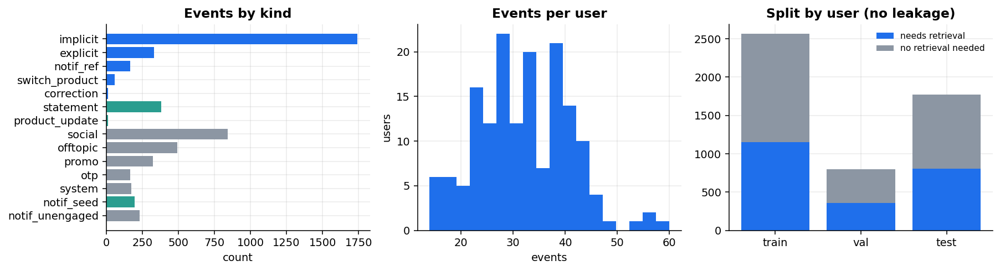
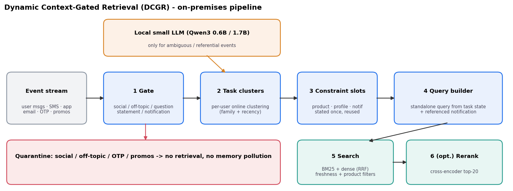
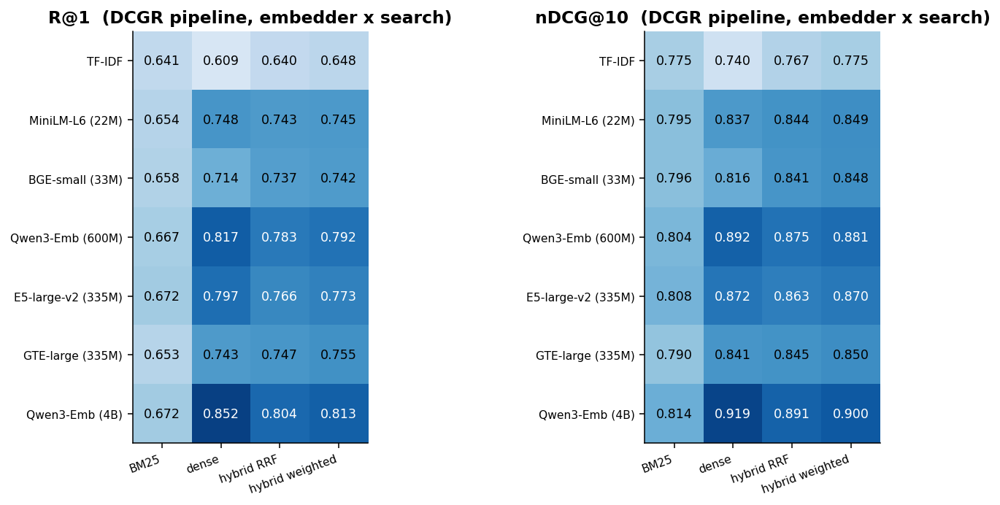
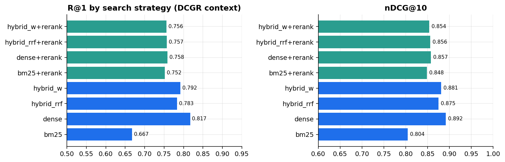
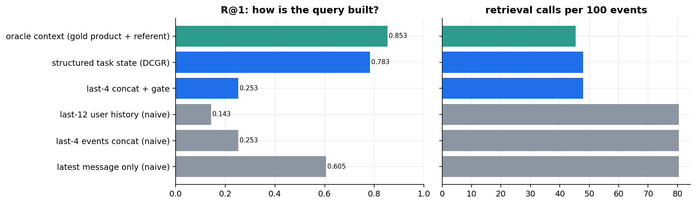
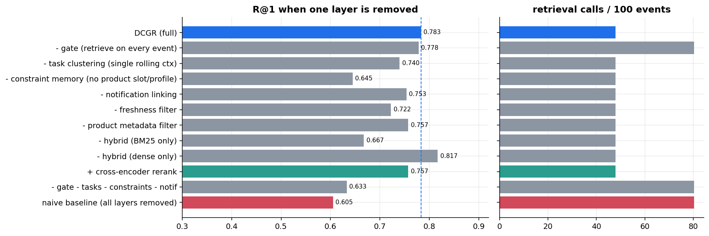
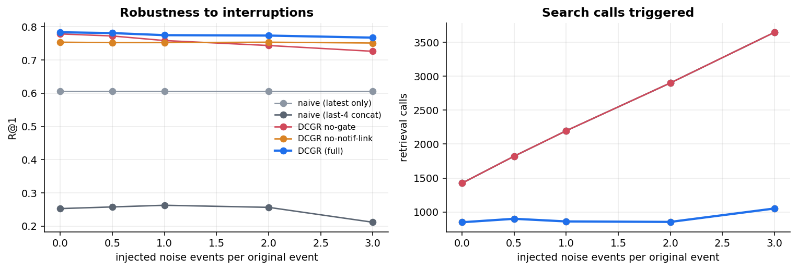
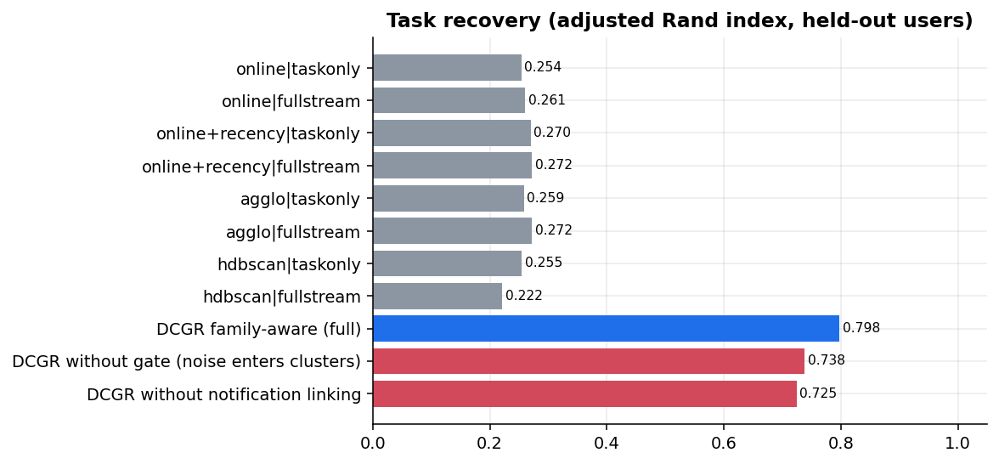
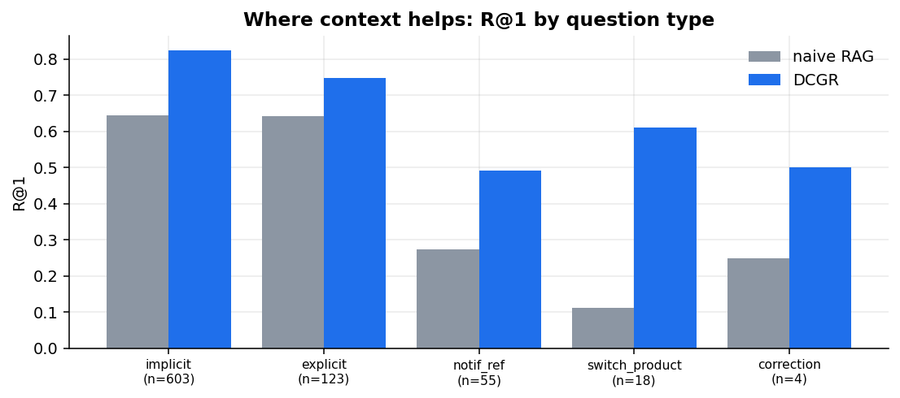
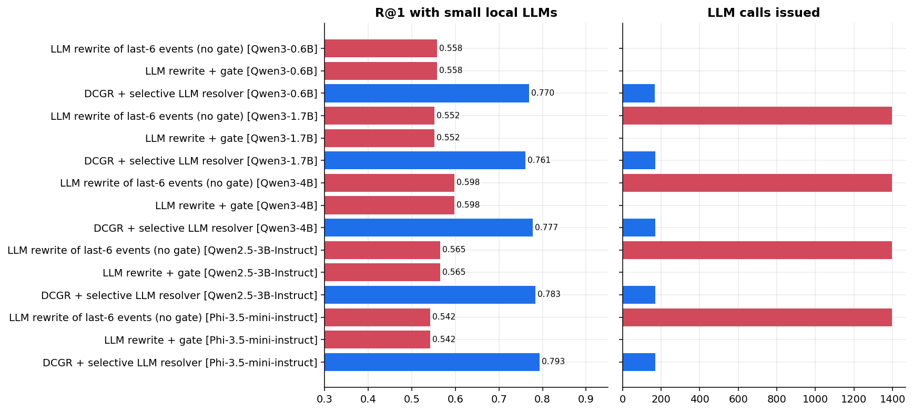

Full evaluation report by Naman Omar — synthetic ICICI-Prudential-style insurance / mutual-fund chat assistant · test split, 160 users, 5,135 events
DCGR is a six-layer pipeline (gate → task clustering → constraint memory → notification linking → query builder → hybrid search) designed for continuous, interrupted, multi-user chat, where a naive "embed the latest message" RAG baseline breaks down. This report evaluates the full system end-to-end: 7 embedding models, 4 search strategies, a 6-way query-construction ablation, a 12-way layer ablation, robustness to injected noise, 5 local LLMs as query resolvers, a task-clustering study, and bootstrap confidence intervals.
A synthetic, labelled chat log for a multi-product (term / ULIP / endowment / pension / mutual fund) insurance assistant: 160 users, 5,135 events, split by user (train / val / test, no leakage). Every record carries the ground-truth intent, task id, gold KB document(s), and whether retrieval should even fire — so gating, task assignment, and ranking can all be scored independently. The knowledge base has 181 documents: core answers, deliberately near-duplicate superseded versions (freshness test), and topic-overlapping distractors.

Every incoming event (user message, SMS, email, app notification) passes through six layers, each independently switchable for ablation:

Bootstrapped over users (2,000 resamples, 95% CI) on the main embedder (Qwen3-Embedding-0.6B):
| System | R@1 | R@5 | MRR@10 | nDCG@10 |
|---|---|---|---|---|
| naive — last-4 concat | 0.253 (0.227–0.278) | 0.660 (0.625–0.695) | 0.419 (0.395–0.444) | 0.503 (0.480–0.527) |
| naive — latest message only | 0.605 (0.569–0.642) | 0.862 (0.833–0.889) | 0.711 (0.681–0.741) | 0.764 (0.738–0.789) |
| DCGR (full) | 0.783 (0.752–0.815) | 0.939 (0.919–0.957) | 0.850 (0.824–0.874) | 0.875 (0.851–0.897) |
The DCGR interval does not overlap either baseline's — the gain is not noise. Concatenating the last 4 raw messages (the most common naive chat-RAG pattern) is actually worse than just embedding the latest message alone, because unrelated interleaved turns (social chatter, promos, other tasks) dilute the query.
Swept 7 embedders × 4 search strategies on the full DCGR pipeline (structured query construction held fixed). Original 4-model sweep (TF-IDF, MiniLM-L6, BGE-small, Qwen3-Emb-0.6B) extended with 3 more: a next-size-up Qwen3 embedder, and two different-family mid-size models.

| Embedder | Params | Best R@1 | Best nDCG@10 | Strategy |
|---|---|---|---|---|
| TF-IDF | — (sparse) | 0.648 | 0.775 | hybrid weighted |
| MiniLM-L6 | 22M | 0.748 | 0.849 | dense / hybrid weighted |
| BGE-small | 33M | 0.742 | 0.848 | hybrid weighted |
| GTE-large new | 335M | 0.755 | 0.850 | hybrid weighted |
| E5-large-v2 new | 335M | 0.797 | 0.872 | dense |
| Qwen3-Emb-0.6B (main) | 600M | 0.817 | 0.892 | dense |
| Qwen3-Emb-4B new | 4B | 0.852 | 0.919 | dense |
Two consistent findings across every embedder: pure dense beats every hybrid variant once the embedder is competent (BM25 only helps TF-IDF and the two weakest dense models), and scale inside the same family keeps paying off — Qwen3-Emb-4B (dense) is the best single number in the whole study at R@1=0.852, a further +3.5pt over the 0.6B version. Among similar-size alternatives, E5-large-v2 clearly outperforms GTE-large (0.797 vs 0.743 R@1 on dense) despite matched parameter counts — instruction/retrieval-specific pretraining matters more than raw size in the 300–600M range.

Cross-encoder reranking (top-20) hurts every strategy here (dense: 0.817 → 0.758 R@1) — the reranker was trained on open-domain passage ranking, not this product's short, template-heavy KB answers, so it's actively miscalibrated for this domain. This is a case where more compute (an extra model pass) makes results worse, and it's only visible because the ablation included it rather than assuming rerankers always help.

| Query strategy | R@1 | Search calls/100 events |
|---|---|---|
| last-12 user history (naive) | 0.143 | 80.4 |
| last-4 events concat (naive) | 0.253 | 80.4 |
| last-4 concat + gate only | 0.253 | 47.9 |
| latest message only (naive) | 0.605 | 80.4 |
| structured task state (DCGR) | 0.783 | 47.9 |
| oracle (gold product + referent) | 0.853 | 45.3 |
This is the single clearest result in the study: concatenating more raw context makes retrieval worse, not better, because it drowns the actual question in unrelated turns — that's the core premise DCGR is built to fix. DCGR closes 72% of the gap between the "latest message" baseline and a perfect oracle that knows the true product and referent, using only predicted structure (no gold labels).

Ranked by damage when removed: constraint memory (0.783 → 0.645, −13.8pt) and hybrid→BM25-only (−11.6pt) hurt most, followed by task clustering (−4.3pt), freshness filtering (−6.1pt), and notification linking (−3.0pt). The gate barely costs accuracy to remove (−0.5pt) but does save 40% of search calls (47.9 vs 80.4 per 100 events) — its job is efficiency, not quality. Oddly, dense-only slightly beats the full hybrid (0.817 vs 0.783) at this embedder — hybrid fusion is a safety net for weaker embedders (§4), not a universal improvement once the embedder is strong.

DCGR (full) stays essentially flat (0.783 → 0.767 R@1) from zero to 3× noise injection, while the naive last-4-concat baseline — already the weakest system — degrades further (0.253 → 0.212) because more noise means more junk in its fixed context window. Removing the gate under noise is the one layer whose cost compounds: without it, search-call volume grows linearly with injected noise (1,424 → 3,648 calls) since every noise event triggers a search; the gate keeps DCGR's call volume nearly flat (848 → 1,051) by filtering social/off-topic/promo/OTP traffic before it ever reaches the query builder.

Four generic clustering strategies were grid-searched over their key hyperparameter (online cosine threshold, online+recency, agglomerative distance threshold, HDBSCAN) on validation users, then scored on held-out test users — every one tops out around ARI≈0.25–0.27, regardless of method. DCGR's family-aware task assignment (which uses the predicted topic family, not just raw text similarity) reaches ARI=0.798, a 3× improvement. Removing the gate (noise enters clusters) or notification linking drops this to 0.738 and 0.725 respectively — both still far above any generic-clustering ceiling. The takeaway: conversational task boundaries in this domain are not recoverable from embedding similarity alone; they need the structured signal DCGR computes.

The gap between naive RAG and DCGR is largest exactly where a human would expect context to matter: resolving "what about this" against a buffered notification, or "and for my other policy" after a product switch — cases a single-message embedding has no way to resolve correctly.
Per-kind breakdown on the full pipeline: implicit R@1=0.824 (n=603), explicit R@1=0.748 (n=123), notification-referent R@1=0.491 (n=55), product-switch R@1=0.611 (n=18), correction R@1=0.50 (n=4, too few to read much into). The two biggest failure modes:
tax_benefit vs tax_on_maturity, payment_modes vs autopay). This is a ranking precision problem within an already-narrowed candidate set, not a context-resolution failure.Three configurations tested per model: (a) LLM rewrites the last 6 events into a standalone query for every turn (no gate — the naive "just add an LLM" pattern), (b) the same behind a gate, (c) DCGR's own design — the LLM is invoked only for the small fraction of turns its own classifiers flag as ambiguous (elliptic/deictic or low-confidence family). Five models: the original Qwen3-0.6B/1.7B, plus three added for this run — Qwen3-4B (same family, bigger), Qwen2.5-3B-Instruct and Phi-3.5-mini-instruct (different families/instruction tuning). All five run locally in 4-bit (NF4) quantization.

| Model | Full rewrite R@1 | Selective resolver R@1 | Selective resolver calls |
|---|---|---|---|
| Qwen3-0.6B | 0.558 | 0.770 | 168 |
| Qwen3-1.7B | 0.552 | 0.761 | 169 |
| Qwen3-4B new | 0.598 | 0.777 | 169 |
| Qwen2.5-3B-Instruct new | 0.565 | 0.783 | 169 |
| Phi-3.5-mini-instruct new | 0.542 | 0.793 | 169 |
Three findings:
For anyone re-running this: two real bugs were found and fixed while extending this sweep (not pre-existing results, which were already correct) —
data/emb_cache/*.pkl) from a prior machine were pickled under numpy≥2.0's internal module layout and failed to unpickle against numpy 1.26.4 here (ModuleNotFoundError: numpy._core.numeric). Fixed by clearing the stale caches and recomputing locally — harmless since they're pure caches, not source data.pipeline.py) never stored the notification's own text, but the LLM selective-resolver's prompt builder tried to read it (resolver_prompt). This only fires when a local LLM is enabled and a referential turn needs to quote a buffered notification — a real latent bug that the original 2-model run likely never fully exercised. Fixed by storing the text at buffer time.This machine's GPU is a shared MIG slice (20GB) whose free memory fluctuated between ~1GB and ~17GB used by other tenants during this run, outside our control. All five LLMs were loaded in 4-bit (NF4, via bitsandbytes) to keep footprint small, and every GPU model-load call was wrapped in a retry-with-backoff helper (common.load_with_retry) to survive transient allocation failures under contention rather than crashing the sweep.